MARS: BOOK RECOMMENDATIONS
“A great book should leave you with many experiences, and slightly exhausted at the end. You live several lives while reading.” ― William Styron
FOR TIMES WHEN YOU NEED TO HYDRATE YOUR EYES
The Kite Runner by Khaled Hosseini
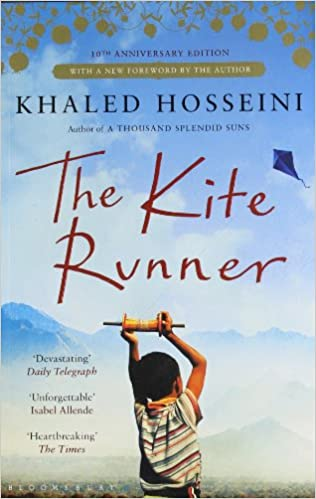
Afghanistan, 1975: Twelve-year-old Amir is desperate to win the local kite-fighting tournament and his loyal friend Hassan promises to help him. But neither of the boys can foresee what will happen to Hassan that afternoon, an event that is to shatter their lives. After the Russians invade and the family is forced to flee to America, Amir realises that one day he must return to Afghanistan under Taliban rule to find the one thing that his new world cannot grant him: redemption.
The Fault In our Stars by John Green

The book is about two teenagers, Hazel Grace Lancaster and Augustus Waters, who are also the protagonists and follows their lives when they are diagnosed with terminal cancer. Their lives change completely post diagnosis. Hazel meets Augustus for the very first time at a, support centre for cancer patients and survivors, which she had started to attend. Augustus is there for a remission. This is when they meet each other and their lives see some light again and they feel alive and better. This is a book that has it all be it love, emotion, drama, humour, pain, fear and even death.
All the Light we Cannot See by Anthony Doerr
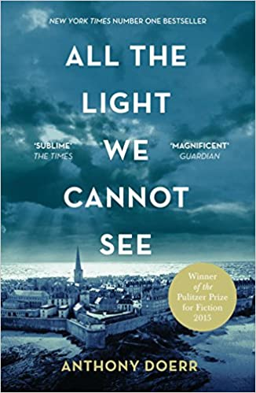When Marie Laure goes blind, aged six, her father builds her a model of their Paris neighbourhood, so she can memorize it with her fingers and then navigate the real streets. But when the Germans occupy Paris, father and daughter flee to Saint-Malo on the Brittany coast, where Marie-Laure’s agoraphobic great uncle lives in a tall, narrow house by the sea wall. In another world in Germany, an orphan boy, Werner, is enchanted by a crude radio. He becomes a master at building and fixing radios, a talent ultimately makes him a highly specialized tracker of the Resistance. Werner travels through the heart of Hitler Youth to the far-flung outskirts of Russia, and finally into Saint-Malo, where his path converges with Marie-Laure.
FOR TIMES WHEN YOU NEED AN ADVENTURE
The Lightning Thief by Rick Riordan
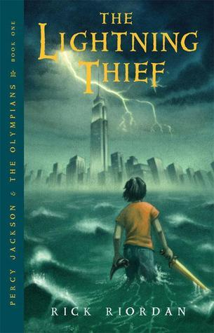
Percy Jackson is a good kid, but he can't seem to focus on his schoolwork or control his temper. And lately, being away at boarding school is only getting worse - Percy could have sworn his pre-algebra teacher turned into a monster and tried to kill him. When Percy's mom finds out, she knows it's time that he knew the truth about where he came from, and that he go to the one place he'll be safe. She sends Percy to Camp Half Blood, a summer camp for demigods (on Long Island), where he learns that the father he never knew is Poseidon, God of the Sea. Soon a mystery unfolds and together with his friends—one a satyr and the other the demigod daughter of Athena - Percy sets out on a quest across the United States to reach the gates of the Underworld (located in a recording studio in Hollywood) and prevent a catastrophic war between the gods.
The Name of the Wind by Patrick Rothfuss
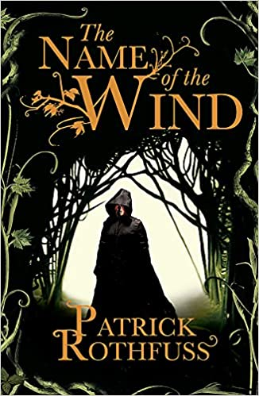So begins the tale of Kvothe - currently known as Kote, the unassuming innkeepter - from his childhood in a troupe of traveling players, through his years spent as a near-feral orphan in a crime-riddled city, to his daringly brazen yet successful bid to enter a difficult and dangerous school of magic. In these pages you will come to know Kvothe the notorious magician, the accomplished thief, the masterful musician, the dragon-slayer, the legend-hunter, the lover, the thief and the infamous assassin.
The Hunger Game by Suzanne Collins

In the ruins of a place once known as North America lies the nation of Panem, a shining Capitol surrounded by twelve outlying districts. The Capitol is harsh and cruel and keeps the districts in line by forcing them all to send one boy and once girl between the ages of twelve and eighteen to participate in the annual Hunger Games, a fight to the death on live TV. Sixteen-year-old Katniss Everdeen regards it as a death sentence when she steps forward to take her sister's place in the Games. But Katniss has been close to dead before—and survival, for her, is second nature. Without really meaning to, she becomes a contender. But if she is to win, she will have to start making choices that weight survival against humanity and life against love.
FOR TIMES WHEN YOU NEED A COZY ROM-COM
To All The Boys I've Loved Before by Jenny Han
To All the Boys I’ve Loved Before is the story of Lara Jean, who has never openly admitted her crushes, but instead wrote each boy a letter about how she felt, sealed it, and hid it in a box under her bed. But one day Lara Jean discovers that somehow her secret box of letters has been mailed, causing all her crushes from her past to confront her about the letters: her first kiss, the boy from summer camp, even her sister's ex-boyfriend, Josh. As she learns to deal with her past loves face to face, Lara Jean discovers that something good may come out of these letters after all.
Simon vs. the Homo Sapiens Agenda by Becky Albertalli
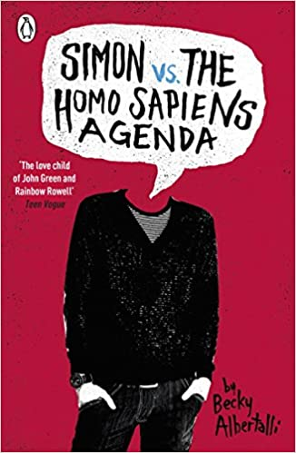Straight people should have to come out too. And the more awkward it is, the better. Simon Spier is sixteen and trying to work out who he is - and what he's looking for. But when one of his emails to the very distracting Blue falls into the wrong hands, things get all kinds of complicated. Because, for Simon, falling for Blue is a big deal . . . It's a holy freaking huge awesome deal.
Can You Keep A Secret By Sophie Kinsella
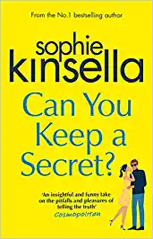Meet Emma Corrigan, a young woman with a huge heart, an irrepressible spirit, and a few little secrets: Secrets from her boyfriend: I've always thought Connor looks a bit like Ken. As in Barbie and Ken. Secrets from her mother: I lost my virginity in the spare bedroom with Danny Nussbaum while Mum and Dad were downstairs watching Ben-Hur. Secrets she wouldn't share with anyone in the world: I have no idea what NATO stands for. Or even what it is. Until she spills them all to a handsome stranger on a plane. At least, she thought he was a stranger.…Until Emma comes face-to-face with Jack Harper, the company's elusive CEO, a man who knows every single humiliating detail about her..
FOR TIMES WHEN YOU NEED A SCI-FI TWIST TO LIFE
The Martian by Andy Weir
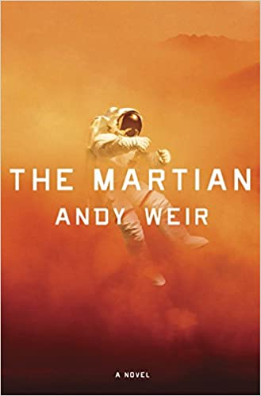Six days ago, astronaut Mark Watney became one of the first people to walk on Mars. Now, he’s sure he’ll be the first person to die there. After a dust storm nearly kills him and forces his crew to evacuate while thinking him dead, Mark finds himself stranded and completely alone with no way to even signal Earth that he’s alive—and even if he could get word out, his supplies would be gone long before a rescue could arrive. Chances are, though, he won’t have time to starve to death. The damaged machinery, unforgiving environment, or plain-old “human error” are much more likely to kill him first. But Mark isn’t ready to give up yet. Drawing on his ingenuity, his engineering skills—and a relentless, dogged refusal to quit—he steadfastly confronts one seemingly insurmountable obstacle after the next. Will his resourcefulness be enough to overcome the impossible odds against him?
Vicious by V.E. Schwab
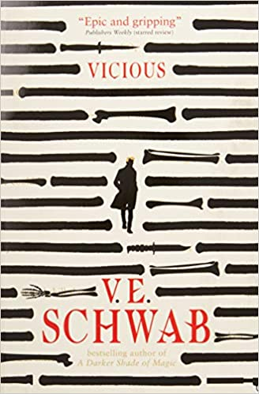Victor and Eli started out as college roommates—brilliant, arrogant, lonely boys who recognized the same sharpness and ambition in each other. In their senior year, a shared research interest in adrenaline, near-death experiences, and seemingly supernatural events reveals an intriguing possibility: that under the right conditions, someone could develop extraordinary abilities. But when their thesis moves from the academic to the experimental, things go horribly wrong. Ten years later, Victor breaks out of prison, determined to catch up to his old friend (now foe), aided by a young girl whose reserved nature obscures a stunning ability. Meanwhile, Eli is on a mission to eradicate every other super-powered person that he can find—aside from his sidekick, an enigmatic woman with an unbreakable will. Armed with terrible power on both sides, driven by the memory of betrayal and loss, the archnemeses have set a course for revenge—but who will be left alive at the end?
Ready Player One by Ernest Cline

In the year 2044, reality is an ugly place. The only time teenage Wade Watts really feels alive is when he's jacked into the virtual utopia known as the OASIS. Wade's devoted his life to studying the puzzles hidden within this world's digital confines, puzzles that are based on their creator's obsession with the pop culture of decades past and that promise massive power and fortune to whoever can unlock them. But when Wade stumbles upon the first clue, he finds himself beset by players willing to kill to take this ultimate prize. The race is on, and if Wade's going to survive, he'll have to win—and confront the real world he's always been so desperate to escape.
FOR PRIDE
Aristotle and Dante Discover the Secrets of the Universe by Benjamin Alire Sáenz
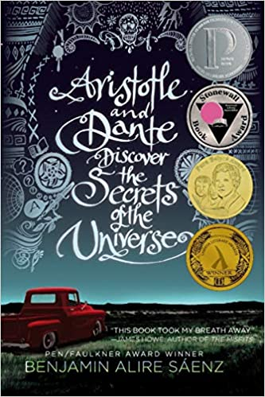Aristotle is an angry teen with a brother in prison. Dante is a know-it-all who has an unusual way of looking at the world. When the two meet at the swimming pool, they seem to have nothing in common. But as the loners start spending time together, they discover that they share a special friendship—the kind that changes lives and lasts a lifetime. And it is through this friendship that Ari and Dante will learn the most important truths about themselves and the kind of people they want to be.
Gentleman's Guide to Vice and Virtue by Mackenzi Lee
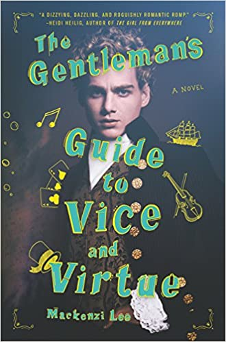
A young bisexual British lord embarks on an unforgettable Grand Tour of Europe with his best friend/secret crush. An 18th-century romantic adventure for the modern age written by This Monstrous Thing author Mackenzi Lee—Simon vs. the Homo Sapiens Agenda meets the 1700s. Henry “Monty” Montague doesn’t care that his roguish passions are far from suitable for the gentleman he was born to be. But as Monty embarks on his grand tour of Europe, his quests for pleasure and vice are in danger of coming to an end. Not only does his father expect him to take over the family’s estate upon his return, but Monty is also nursing an impossible crush on his best friend and traveling companion, Percy. So Monty vows to make this yearlong escapade one last hedonistic hurrah and flirt with Percy from Paris to Rome. But when one of Monty’s reckless decisions turns their trip abroad into a harrowing manhunt, it calls into question everything he knows, including his relationship with the boy he adores. Witty, dazzling, and intriguing at every turn, The Gentleman's Guide to Vice and Virtue is an irresistible romp that explores the undeniably fine lines between friendship and love.
You Know Me Well by Nina LaCour and David Levithan
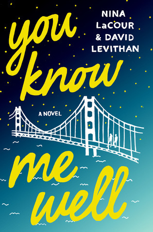
Mark and Kate have sat next to each other for an entire year, but have never spoken. For whatever reason, their paths outside of class have never crossed. That is, until Kate spots Mark miles away from home, out in the city for a wild, unexpected night. Kate is lost, having just run away from a chance to finally meet the girl she has been in love with from afar. Mark, meanwhile, is in love with his best friend Ryan, who may or may not feel the same way. When Kate and Mark meet up, little do they know how important they will become to each other—and how, in a very short time, they will know each other better than any of the people who are supposed to know them more.
Need more Recommendations? check them out here